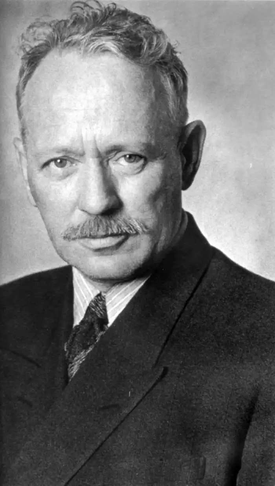
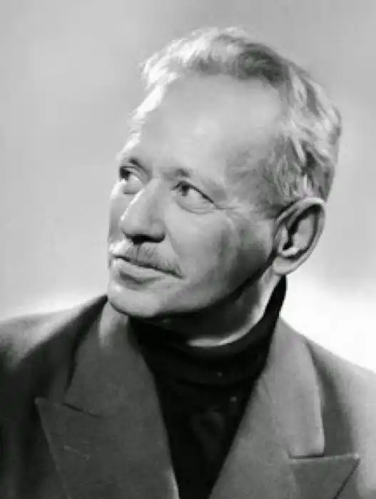

Шолохов Михайло
(1905-1984)
Російський письменник, лауреат Нобелівської премії (1965). Найвідоміші твори — "Піднята цілина", "Тихий Дон", "Доля людини". "Я хотів би, щоб мої книги допомагали людям бути кращими, пробуджували любов до людини", — говорив Шолохов. Така авторська позиція нагадує про себе в усіх творах письменника. Шолохов походив з селянської родини, виріс на Дону, пройшов стежками Громадянської війни, служив у продовольчому загоні, у часи Великої Вітчизняної працював військовим репортером. Його власна біографія може служити відтворенням тем, яких він торкається: життя донського козацтва в різні часи ("На Дону", "Козаки", "Тихий Дон"), тема людини на дорогах війни ("Вони боролися за Батьківщину", "Доля людини") та інші. Шолохов — письменник-реаліст, і навіть при бажанні змалювати перспективи щасливого радянського життя він не оминає гострих питань, відтворює трагічний конфлікт людини й епохи. Майстерність Шолохова виявилась у вмінні створювати яскраві колоритні образи, поєднуючи в них індивідуальну своєрідність і соціальне тло.